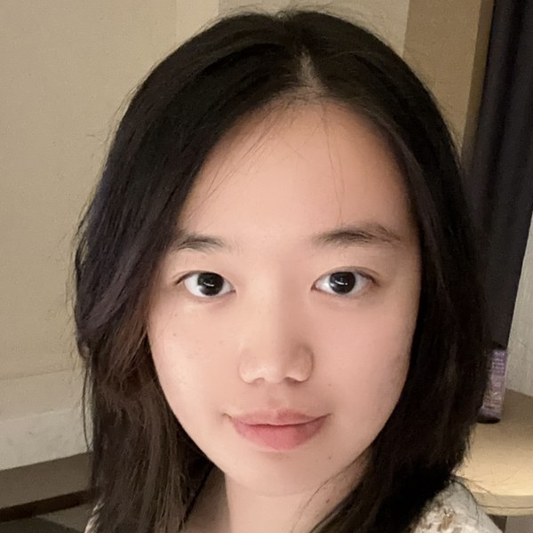

Talk
Spacecraft Rendezvous Guidance via Covariance Control
I design guidance and control that keeps spacecraft and robots safe when the real world doesn’t match the model.
Applying to master’s programs in controls and robotics for fall 2027.

Senior, B.S. Mechanical Engineering and B.S. Aerospace Engineering
University of California, Irvine, expected June 2027
When two spacecraft meet in orbit, navigation is imperfect and thrusters are noisy, and a small error at a few meters per second can end in a collision. We design the nominal trajectory and the spread of possible errors at the same time, so that safety constraints hold with a chosen probability rather than only in the ideal case.
I wrote most of the code for this project, across the group’s two Julia packages: SpacecraftRendezVous.jl for dynamics and simulation, and the covariance-control solver.
Spacecraft Rendezvous Guidance via Covariance Control
Spacecraft Rendezvous Guidance via Covariance Control
Advancing Technology: An Approach to Convolutional Neutral Network in Automatic Welding Systems
A review of how convolutional neural networks improve weld-defect detection, process control and quality assessment in automated welding.
I worked on a two-board servo drive for permanent-magnet motors. The control board carries a TI TMS320F28335 DSP with encoder, SPI, serial and JTAG interfaces. It stacks on a three-phase inverter board built around an intelligent power module, with a rectifier bridge, 450 V DC-bus capacitors, Hall-effect current sensing and optocoupler isolation, and accepts 20–220 V AC or 20–380 V DC.
TMS320F28335Altium DesignerCode Composer StudioFOC and SVPWMPMSM
In a four-person project on tuning the loop that holds a DC motor at a commanded angle, G(s) = 3 / (0.1s² + s), I was responsible for the theory and the transfer-function analysis.
The literature review on what each gain does; the Octave analysis of every design (step responses, pole–zero maps and Bode plots); and the discussion and conclusion. My teammates built the Falstad and Tinkercad circuit simulations.
PD / PID controlPole–zero analysisBode plotsOctaveOp-amp circuits
Try the gains
Applied direct-drive technology in CNC machines and assisted engineers with product testing and data analysis.
SolidWorks models and mechanism designs from my courses, team projects and personal work. Use the arrows or swipe to move between projects.